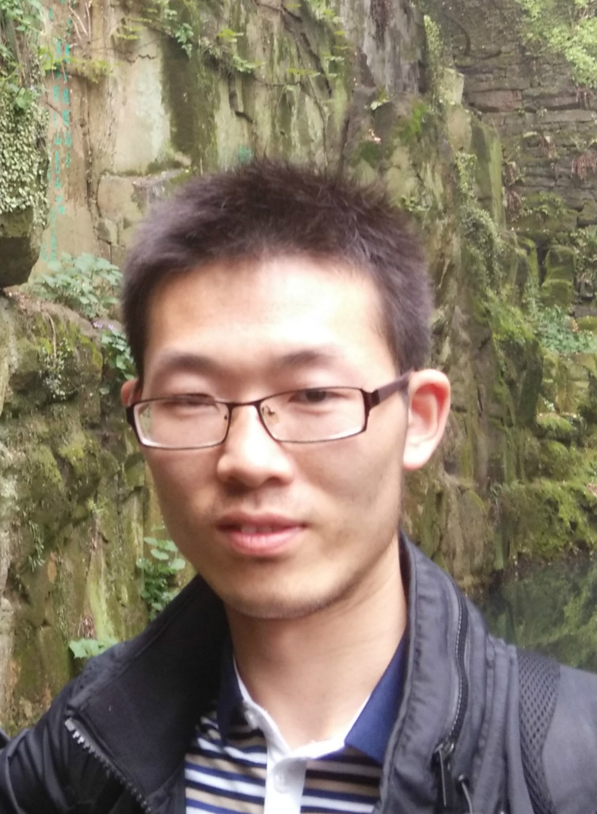

|  |
Shenghua He PhD student (fist year), Research Assistant Department of Electrical and Computer Engineering Clemson University Clemson, South Carolina(S.C.), United States
Email: shenghh (at) clemson.edu |
|
|
Welcome to Shenghua He's Homepage! I am a first year PhD student, majoring in Computer Engineering, in Department of Electrical and Computer Engineering of Clemson University. I received my MS degree (Apr, 2015) from Beijing University of Posts & Telecommunications (Beijing, China), and BS degree (June, 2012) from Wuhan University of Technology (Wuhan, China), both in Electrical Engineering. [Resume] [News] [Research] [Publications] [Others] |
News
- My journal article, "A Pricing Power Control Scheme with Statistical Delay QoS Provisioning in Uplink of Two-tier OFDMA Femtocell Networks", is accepted by Mobile Networks and Applications (recent impact factor:1.5).(June 26, 2015)
- I become a PhD student in Clemson University.(May 5, 2015)
- I receive my MS degree in EE and graduate from Beijing University of Posts & Telecommunications.(April 2, 2015)
- My co-authored journal article, "Resource Management Based on Security Satisfaction Ratio with Fairness-Aware in Two-Way Relay Networks", is accepted by International Journal of Distributed Sensor Networks.(March 26, 2015)
- I defended my thesis. (March 14, 2015)
- I am accepted by the PhD program of Computer Engineering in Clemson University and receive the Graduate Research Assistantship. I am going to Clemson University(Clemson, SC, United States) for my PhD study in Summer, 2015. (December 20, 2014)
- I receive the Graduate National Scholarship (Top 3%). (October 14, 2014)
Research
- Research Interests
- Data Center Networks
- Cloud Computing
- Distributed Computing
- Computer Network System & Architecture
- Research Experience
- (May.2015-Current) PhD. Student & Research Assistant, Department of Electronic and Computer Engineering, Clemson University, SC, USA
I work on the research area of Cloud Computing. For one hand, I try to improve the utilization of cloud resources, such as computing, storage, and bandwidth, by designing novel resource management strategies in Datacenter Network. I believe there are some similarities between the resource allocation in data center network and human economic behaviors, such as competition and cooperation. For another hand, I hope to improve the network performance, such as throughput and flow completion time(FCT), by flow and congestion control. In my opinion, the data transport in computer network is similar to the traffic transport in real word, so I hope to introduce some of the transport schemes in real word into the congestion control. Furthermore, datacenter networks have some superiorities compared with Internet, which is combined by heterogeneous networks with the TCP/IP protocol stack. The network scalability is certain, and the network is homogeneous, which would lead to the network performance enhancement by improving the protocol stack. - (Aug. 2013-Mar.2015) MS. Student, Beijing Key Lab of Network System Architecture and Convergence, BUPT, Beijing
I work on the wireless resource managements, such as subchannel allocation and transmissioin power optimization, in heterogeneous networks(HetNet), which are consisted of small cell networks underlying in macrocell network. To solve the cross- and intro-interference challenges in heterogeneous wireless networks and improve the network throughput, I model the problem as a Stalkberg Game in which all the users compete with each other rationally and selfishly on the tolerable interference power in order to improve their own data transmission rates. Solving the modelled problem by mathematically analysing the equilibrium points, I proposed the power allocation schemes, which improve the energy efficiency, and throughput with statistic delay guarantee. The related research works has been already published in journals, such as Computer Networks & Applications and International Journal of Distributed Sensor Networks, and conferences, such as ICT 2014, VTC 2014 and WPMC 2014 (see the publications part). - (May 2013-Sept.2013) Android R&D Intern, Beijing Novel-TV Media Technology Co., Ltd, Beijing.
As research and development (R&D) Intern of an on-line video interactive system, I bore full responsibility for the R&D of the Android client, which contains three major functions: user login management, user camera selection management and video capture. In this system, users can capture their video by themselves, and transmit them immediately to the remote video servers, from which the website users could watch them on website and other clients. This system can be used on campus, where students can share their lives with their families and friends in real time. Travellers can also share the beautiful sceneries with other friends. That is so cool. During this period, I have not merely learnt how to put the fundamental knowledges of computer networks into practice, but also broaden my view about the programming skills. - (Sept.2012-May 2013) MS. Student, Beijing Key Lab of Network System Architecture & Convergence, BUPT, Beijing. As a participant in the R&D of a video conference system, which supports video conference between PC users and Android users, I was responsible for the development of the user interface for the Android client. In this client, users can communicate with others over the connection in the server. During this period, I have developed my skills on Java programming in Android environment.
- (May.2015-Current) PhD. Student & Research Assistant, Department of Electronic and Computer Engineering, Clemson University, SC, USA
Publications
- Journal Papers
- S. He, Z. Lu, X. Wen, Z. Zhang, J. Zhao and W. Jing, "A Pricing Power Control Scheme with Statistical Delay QoS Provisioning in Uplink of Two-tier OFDMA Femtocell Networks", Mobile Networks and Applications:The Journal of SPECIAL ISSUES on Mobility of Systems, Users, Data an Computing (Impact Factor:1.5), June 2015.
- J. Zhao, Z. Lu, X. Wen, H. Zhang, S. He and W. Jing, "Resource Management Based on Security Satisfaction Ratio with Fairness-Aware in Two-Way Relay Networks", International Journal of Distributed Sensor Networks, Volume 2015.
- Conference Papers
- S. He, Z. Lu, X. Wen, Z. Zhang, Y. Sun and L. Zhang, "Energy-Efficient Power Allocation with QoS Guarantee in OFDMA Wireless Networks", the proc. of 17th International Symposium on Wireless Personal Multimedia Communications (WPMC), Sept.2014.
- S. He, L. Zhang, X. Wen, Z. Zhang, Z. Lu and Y. Sun, "Price-based power control with statistical delay QoS guarantee in two-tier femtocell networks", the proc. of 21st International Conference on Telecommunications (ICT), May 2014.
- L. Zhang, S. He, X. Wen, W. Zheng, J. Zhang and Z. Lu, "Network MIMO with decision tree classification in downlink OFDMA networks", the proc. of 21st International Conference on Telecommunications (ICT), May 2014.
- Z. Zhang, X. Wen, Z. Li, S. He, W. Jing and J. Zhao, "Qos-aware energy-efficient power control in two-tier femtocell networks based on Q-learning", the proc. of 21st International Conference on Telecommunications (ICT), May 2014.
- L. Zhang, X. Wen, T. Xu, Z. Lu, J. Zhao, S. He, "Coordinated Scheduling in Downlink Multi-Cell OFDMA Networks", the proc. of 2014 IEEE 80th Vehicular Technology Conference (VTC Fall), Sept.2014.
Others
- Oral Presentation
- "Price-based power control with statistical delay QoS guarantee in two-tier femtocell networks", Lecture at ICT 2014, Lisbon Institute of University, Lisbon, Portugal
- Awards
- "Graduate Research Assistantship, ECE, Clemson University",2015-2016
- "Graduate National Scholarship, Ministry of Education & Ministry of Finance, China"(Top 3%), Oct. 2014
- "Third-class Graduate Scholarship, BUPT, Beijing, China", 2013-2014
- "Second-class Graduate Scholarship, BUPT, Beijing, China", 2012-2013
- "Outstanding Graduate Award, WHUT, Wuhan, China"(Top 10%), 2011-2012
- "National Scholarship of Encouragement, Ministry of Education, China"(Top 5%), 2010-2011
- "3-A student Award, WHUT, Wuhan, China"(Top 5%), 2010-2011
- "National Scholarship of Encouragement, Ministry of Education, China"(Top 5%),2009-2010
- "Excellent StudentWork Award, School of Information Engineering, WHUT, Wuhan, China"(Top 10%), 2009-2010
- "National Scholarship of Encouragement, Ministry of Education, China"(Top 5%), 2008-2009
- "3-A student Award, WHUT, Wuhan, China"(Top 5%), 2008-2009
- Skills
- Programming Languages: Java, C/C++,Matlab
- Development Tools: Eclipse, Matlab
- Data Analysis: Origin
- Development Environment: Android
- English Proficiency
- GRE: 312 Quantitative: 164; Verbal: 148; Analytical Writing: 3
- TOEFL: 83 Reading: 26; Listening: 18; Speaking:18; Writing: 21
- Hobbies
- basketball, badminton, running, hiking

|